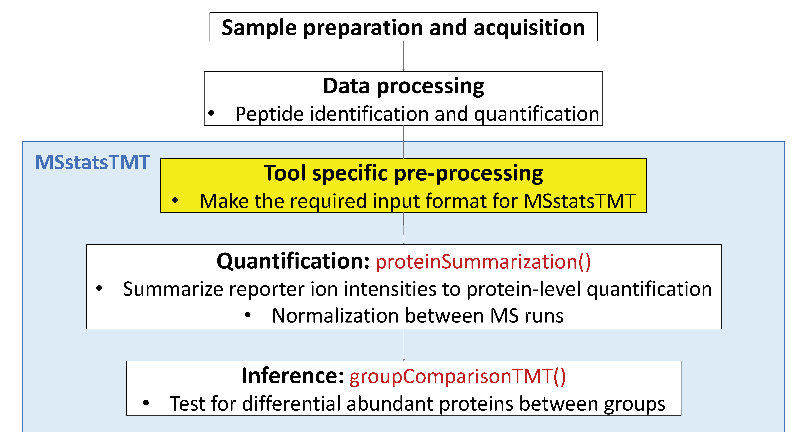

Chapter 4 Day 2 - Section 4 : MSstatsTMT, introductioin to data and preprocessing
4.1 Objective
- Preprocessing steps to make required input format for MSstatsTMT from output from diverse output of spectral processing and peptide quantification tools.
- Make annotation file, based on experimental design.
4.2 Data
Controlled mixtures: Sigma UPS1 48 protein-mix were spiked at 4 different ratio into a SILAC-labelled HeLa lysate. The mixtures were measured by TMT 10-plexes.
the peptide quantification data of controlled mixtures, processed by Proteome Discoverer and MaxQuant.

4.3 Load MSstatsTMT
Load MSstatsTMT first. Then you are ready to start MSstats.
# install MSstatsTMT from bioconductor
# if (!requireNamespace("BiocManager", quietly = TRUE))
# install.packages("BiocManager")
# BiocManager::install("MSstatsTMT")
library(MSstatsTMT) # make sure it is version 1.2.1## Registered S3 methods overwritten by 'ggplot2':
## method from
## [.quosures rlang
## c.quosures rlang
## print.quosures rlang?MSstatsTMT ***
***
4.4 Allowable data formats
MSstatsTMT performs statistical analysis steps, that follow peptide identification and quantitation. Therefore, input to MSstatsTMT is the output of other software tools (such as Proteome Discoverer, MaxQuant and so on) that read raw spectral files
, identify and quantify peptide ions. The preferred structure of data for use in MSstatsTMT is a .csv file in a long format with at least 10 columns representing the following variables: ProteinName, PeptideSequence, Charge, PSM, Channel, Condition, BioReplicate, Mixture, TechRepMixture, Intensity. The variable names are fixed, but are case-insensitive.
## ProteinName PeptideSequence Charge
## 1 P04406 [K].lISWYDNEFGYSNR.[V] 2
## 2 Q9NSD9 [K].irPFAVAAVLr.[N] 3
## 3 P04406 [K].lVINGNPITIFQErDPSk.[I] 3
## 4 P04406 [R].vVDLmAHMASkE.[-] 3
## 5 P06576 [R].dQEGQDVLLFIDNIFR.[F] 3
## 6 P06576 [R].iPSAVGYQPTLATDMGTMQEr.[I] 3
## PSM Mixture TechRepMixture
## 1 [K].lISWYDNEFGYSNR.[V]_2 Mixture1 1
## 2 [K].irPFAVAAVLr.[N]_3 Mixture1 1
## 3 [K].lVINGNPITIFQErDPSk.[I]_3 Mixture1 1
## 4 [R].vVDLmAHMASkE.[-]_3 Mixture1 1
## 5 [R].dQEGQDVLLFIDNIFR.[F]_3 Mixture1 1
## 6 [R].iPSAVGYQPTLATDMGTMQEr.[I]_3 Mixture1 1
## Run Channel Condition
## 1 161117_SILAC_HeLa_UPS1_TMT10_Mixture1_01.raw 126 Norm
## 2 161117_SILAC_HeLa_UPS1_TMT10_Mixture1_01.raw 126 Norm
## 3 161117_SILAC_HeLa_UPS1_TMT10_Mixture1_01.raw 126 Norm
## 4 161117_SILAC_HeLa_UPS1_TMT10_Mixture1_01.raw 126 Norm
## 5 161117_SILAC_HeLa_UPS1_TMT10_Mixture1_01.raw 126 Norm
## 6 161117_SILAC_HeLa_UPS1_TMT10_Mixture1_01.raw 126 Norm
## BioReplicate Intensity
## 1 Mixture1_Norm 8348.351
## 2 Mixture1_Norm 28327.492
## 3 Mixture1_Norm 1275010.965
## 4 Mixture1_Norm 80589.877
## 5 Mixture1_Norm 2231.389
## 6 Mixture1_Norm 144854.307Let’s start preprocessing steps to make required input format for MSstatsTMT from output from diverse output of peptide quantification tools.

4.5 Proteome Discoverer output
4.5.1 Read data
The required input data is the PSM-level data generated by Proteome Discoverer 2.2.
We first load and access the dataset processed by Proteome Discoverer. The file name is ‘spikedin_PSMs.txt’.
# Read output from Proteome Discoverer
raw.pd <- read.delim(file="data/data_ProteomeDiscoverer_TMT/spikedin_PSMs.txt")# Check the column names
colnames(raw.pd)## [1] "Checked" "Confidence"
## [3] "Identifying.Node" "PSM.Ambiguity"
## [5] "Annotated.Sequence" "Modifications"
## [7] "Marked.as" "X..Protein.Groups"
## [9] "X..Proteins" "Master.Protein.Accessions"
## [11] "Master.Protein.Descriptions" "Protein.Accessions"
## [13] "Protein.Descriptions" "X..Missed.Cleavages"
## [15] "Charge" "DeltaScore"
## [17] "DeltaCn" "Rank"
## [19] "Search.Engine.Rank" "m.z..Da."
## [21] "MH...Da." "Theo..MH...Da."
## [23] "DeltaM..ppm." "Deltam.z..Da."
## [25] "Activation.Type" "MS.Order"
## [27] "Isolation.Interference...." "Average.Reporter.S.N"
## [29] "Ion.Inject.Time..ms." "RT..min."
## [31] "First.Scan" "Spectrum.File"
## [33] "File.ID" "Abundance..126"
## [35] "Abundance..127N" "Abundance..127C"
## [37] "Abundance..128N" "Abundance..128C"
## [39] "Abundance..129N" "Abundance..129C"
## [41] "Abundance..130N" "Abundance..130C"
## [43] "Abundance..131" "Quan.Info"
## [45] "Ions.Score" "Identity.Strict"
## [47] "Identity.Relaxed" "Expectation.Value"
## [49] "Percolator.q.Value" "Percolator.PEP"The column names are differently from required input. Let’s do preliminary check for this input.
# total number of unique protein name
proteins <- unique(raw.pd$Protein.Accessions)
length(proteins)## [1] 50# show the spiked-in proteins
proteins[grepl("ups",proteins)]## [1] P02788ups P62988ups P68871ups P02741ups P01008ups
## [6] P10636-8ups P02787ups P02753ups P00915ups P05413ups
## [11] P01344ups P01579ups P01031ups P01375ups P02144ups
## 50 Levels: A1L0T0 O00625 O60427 P00915ups P01008ups ... Q9Y6C9# total number of unique peptide names
length(unique(raw.pd$Annotated.Sequence))## [1] 461# unique Spectrum.File, which is TMT run.
unique(raw.pd$Spectrum.File)## [1] 161117_SILAC_HeLa_UPS1_TMT10_Mixture3_03.raw
## [2] 161117_SILAC_HeLa_UPS1_TMT10_Mixture4_02.raw
## [3] 161117_SILAC_HeLa_UPS1_TMT10_Mixture1_01.raw
## [4] 161117_SILAC_HeLa_UPS1_TMT10_Mixture5_02.raw
## [5] 161117_SILAC_HeLa_UPS1_TMT10_Mixture2_02.raw
## [6] 161117_SILAC_HeLa_UPS1_TMT10_Mixture5_01.raw
## [7] 161117_SILAC_HeLa_UPS1_TMT10_Mixture1_02.raw
## [8] 161117_SILAC_HeLa_UPS1_TMT10_Mixture4_03.raw
## [9] 161117_SILAC_HeLa_UPS1_TMT10_Mixture3_02.raw
## [10] 161117_SILAC_HeLa_UPS1_TMT10_Mixture3_01.raw
## [11] 161117_SILAC_HeLa_UPS1_TMT10_Mixture5_03.raw
## [12] 161117_SILAC_HeLa_UPS1_TMT10_Mixture1_03.raw
## [13] 161117_SILAC_HeLa_UPS1_TMT10_Mixture4_01.raw
## [14] 161117_SILAC_HeLa_UPS1_TMT10_Mixture2_03.raw
## [15] 161117_SILAC_HeLa_UPS1_TMT10_Mixture2_01.raw
## 15 Levels: 161117_SILAC_HeLa_UPS1_TMT10_Mixture1_01.raw ...4.5.2 Prepare annotation file
MSstatsTMT can make inference for group comparison design. In a group comparison design, the conditions (e.g., disease states) are profiled across non-overlapping sets of biological replicates (i.e., subjects). In this example there are 4 conditions, 0.125, 0.5, 0.667, 1 (in general the number of conditions can vary). There are 2 subjects per condition per MS run (in general an equal number of replicates per condition is not required). Besides 2 pooled control replicates per run for across TMT-plex normalizations. Totally, each mixture has 10 replicates. There are 5 mixtures and each mixture has 3 technical replicate runs (in general technical replicates are not required, and their number per sample may vary). Overall, in this example there are 5 × 3 = 15 mass spectrometry runs and 5 × 3 x 10 = 150 replicates.
Mixture |
Run |
|---|---|
| 1 | 161117_SILAC_HeLa_UPS1_TMT10_Mixture1_01.raw |
| 1 | 161117_SILAC_HeLa_UPS1_TMT10_Mixture1_01.raw |
| 1 | 161117_SILAC_HeLa_UPS1_TMT10_Mixture1_03.raw |
| 2 | 161117_SILAC_HeLa_UPS1_TMT10_Mixture1_01.raw |
| 2 | 161117_SILAC_HeLa_UPS1_TMT10_Mixture2_02.raw |
| 2 | 161117_SILAC_HeLa_UPS1_TMT10_Mixture2_03.raw |
| 3 | 161117_SILAC_HeLa_UPS1_TMT10_Mixture1_01.raw |
| 3 | 161117_SILAC_HeLa_UPS1_TMT10_Mixture3_02.raw |
| 3 | 161117_SILAC_HeLa_UPS1_TMT10_Mixture3_03.raw |
| 4 | 161117_SILAC_HeLa_UPS1_TMT10_Mixture4_01.raw |
| 4 | 161117_SILAC_HeLa_UPS1_TMT10_Mixture4_02.raw |
| 4 | 161117_SILAC_HeLa_UPS1_TMT10_Mixture4_03.raw |
| 5 | 161117_SILAC_HeLa_UPS1_TMT10_Mixture5_01.raw |
| 5 | 161117_SILAC_HeLa_UPS1_TMT10_Mixture5_02.raw |
| 5 | 161117_SILAC_HeLa_UPS1_TMT10_Mixture5_03.raw |
Here show run 161117_SILAC_HeLa_UPS1_TMT10_Mixture1_01.raw as an example,
Run |
Channel |
BioReplicate |
Condition |
|---|---|---|---|
| 1 | X127C | 1.X127C | 0.125 |
| 1 | X129N | 1.X129N | 0.125 |
| 1 | X128N | 1.X128N | 0.5 |
| 1 | X129C | 1.X129C | 0.5 |
| 1 | X127N | 1.X127N | 0.667 |
| 1 | X130C | 1.X130C | 0.667 |
| 1 | X128C | 1.X128C | 1 |
| 1 | X130N | 1.X130N | 1 |
| 1 | X126 | 1.X126 | Norm |
| 1 | X131 | 1.X131 | Norm |
The most important is that 1) Run is not order of spectral acquisition, but just unique MS run ID 2) if normalization between runs need to be done, then each run must have at least one Norm channel 3) Channel column in the annotation file should match with the corresponding channel names in in output of Proteome Discoverer 4) Spectrum.File in the PSM output of Proteome Discoverer should be the Run column in the annotation file 5) If one channel of one mixture doesn’t have sample, put None under Condition and BioReplicate column .
Annotation information is required to fill in Condition, TechRepMixture, Mixture and BioReplicate for corresponding Run and Channel information. Users have to prepare as csv or txt file like ‘PD_Annotation.csv’, which includes Run, Channel, Condition, BioReplicate, TechRepMixture and Mixture information, and load it in R.
annot.pd <- read.csv(file="data/data_ProteomeDiscoverer_TMT/PD_Annotation.csv")
head(annot.pd)## Run Mixture TechRepMixture
## 1 161117_SILAC_HeLa_UPS1_TMT10_Mixture2_01 Mixture2 1
## 2 161117_SILAC_HeLa_UPS1_TMT10_Mixture2_01 Mixture2 1
## 3 161117_SILAC_HeLa_UPS1_TMT10_Mixture2_01 Mixture2 1
## 4 161117_SILAC_HeLa_UPS1_TMT10_Mixture2_01 Mixture2 1
## 5 161117_SILAC_HeLa_UPS1_TMT10_Mixture2_01 Mixture2 1
## 6 161117_SILAC_HeLa_UPS1_TMT10_Mixture2_01 Mixture2 1
## Fraction Channel Condition BioReplicate
## 1 F1 channel.0 Norm Norm
## 2 F1 channel.1 0.5 0.5
## 3 F1 channel.2 1 1
## 4 F1 channel.3 0.667 0.667
## 5 F1 channel.4 0.125 0.125
## 6 F1 channel.5 1 14.5.2.1 Prepare the file with run information
Raw Spectrum file name in the output of peptide quantification tool should be the Run information in the annotation file.
Let’s start with Spectrum.File in PSM output of Proteome Discoverer.
runs <- unique(raw.pd$Spectrum.File) # MS runs
runs## [1] 161117_SILAC_HeLa_UPS1_TMT10_Mixture3_03.raw
## [2] 161117_SILAC_HeLa_UPS1_TMT10_Mixture4_02.raw
## [3] 161117_SILAC_HeLa_UPS1_TMT10_Mixture1_01.raw
## [4] 161117_SILAC_HeLa_UPS1_TMT10_Mixture5_02.raw
## [5] 161117_SILAC_HeLa_UPS1_TMT10_Mixture2_02.raw
## [6] 161117_SILAC_HeLa_UPS1_TMT10_Mixture5_01.raw
## [7] 161117_SILAC_HeLa_UPS1_TMT10_Mixture1_02.raw
## [8] 161117_SILAC_HeLa_UPS1_TMT10_Mixture4_03.raw
## [9] 161117_SILAC_HeLa_UPS1_TMT10_Mixture3_02.raw
## [10] 161117_SILAC_HeLa_UPS1_TMT10_Mixture3_01.raw
## [11] 161117_SILAC_HeLa_UPS1_TMT10_Mixture5_03.raw
## [12] 161117_SILAC_HeLa_UPS1_TMT10_Mixture1_03.raw
## [13] 161117_SILAC_HeLa_UPS1_TMT10_Mixture4_01.raw
## [14] 161117_SILAC_HeLa_UPS1_TMT10_Mixture2_03.raw
## [15] 161117_SILAC_HeLa_UPS1_TMT10_Mixture2_01.raw
## 15 Levels: 161117_SILAC_HeLa_UPS1_TMT10_Mixture1_01.raw ...The run ID has the mixture and technical replicate information
Let’s try to extract the mixture and technical replicate information.
library(tidyr)
library(dplyr)
Run_info <- data.frame(Run = runs) # initialize the run file
# use function separate()
?separate
## Add the mixture and technical replicate information
Run_info <- Run_info %>%
separate(Run, c("Mixture", "TechRepMixture"), sep="_0", remove = FALSE)
Run_info## Run
## 1 161117_SILAC_HeLa_UPS1_TMT10_Mixture3_03.raw
## 2 161117_SILAC_HeLa_UPS1_TMT10_Mixture4_02.raw
## 3 161117_SILAC_HeLa_UPS1_TMT10_Mixture1_01.raw
## 4 161117_SILAC_HeLa_UPS1_TMT10_Mixture5_02.raw
## 5 161117_SILAC_HeLa_UPS1_TMT10_Mixture2_02.raw
## 6 161117_SILAC_HeLa_UPS1_TMT10_Mixture5_01.raw
## 7 161117_SILAC_HeLa_UPS1_TMT10_Mixture1_02.raw
## 8 161117_SILAC_HeLa_UPS1_TMT10_Mixture4_03.raw
## 9 161117_SILAC_HeLa_UPS1_TMT10_Mixture3_02.raw
## 10 161117_SILAC_HeLa_UPS1_TMT10_Mixture3_01.raw
## 11 161117_SILAC_HeLa_UPS1_TMT10_Mixture5_03.raw
## 12 161117_SILAC_HeLa_UPS1_TMT10_Mixture1_03.raw
## 13 161117_SILAC_HeLa_UPS1_TMT10_Mixture4_01.raw
## 14 161117_SILAC_HeLa_UPS1_TMT10_Mixture2_03.raw
## 15 161117_SILAC_HeLa_UPS1_TMT10_Mixture2_01.raw
## Mixture TechRepMixture
## 1 161117_SILAC_HeLa_UPS1_TMT10_Mixture3 3.raw
## 2 161117_SILAC_HeLa_UPS1_TMT10_Mixture4 2.raw
## 3 161117_SILAC_HeLa_UPS1_TMT10_Mixture1 1.raw
## 4 161117_SILAC_HeLa_UPS1_TMT10_Mixture5 2.raw
## 5 161117_SILAC_HeLa_UPS1_TMT10_Mixture2 2.raw
## 6 161117_SILAC_HeLa_UPS1_TMT10_Mixture5 1.raw
## 7 161117_SILAC_HeLa_UPS1_TMT10_Mixture1 2.raw
## 8 161117_SILAC_HeLa_UPS1_TMT10_Mixture4 3.raw
## 9 161117_SILAC_HeLa_UPS1_TMT10_Mixture3 2.raw
## 10 161117_SILAC_HeLa_UPS1_TMT10_Mixture3 1.raw
## 11 161117_SILAC_HeLa_UPS1_TMT10_Mixture5 3.raw
## 12 161117_SILAC_HeLa_UPS1_TMT10_Mixture1 3.raw
## 13 161117_SILAC_HeLa_UPS1_TMT10_Mixture4 1.raw
## 14 161117_SILAC_HeLa_UPS1_TMT10_Mixture2 3.raw
## 15 161117_SILAC_HeLa_UPS1_TMT10_Mixture2 1.rawThen let’s clean the Mixture ID and TechRepMixture ID
## clean the run file and add fraction information
Run_info <- Run_info %>%
mutate(Mixture = gsub("161117_SILAC_HeLa_UPS1_TMT10_", "", Mixture),
TechRepMixture = gsub(".raw", "", TechRepMixture),
Fraction = "F1")
Run_info## Run Mixture TechRepMixture
## 1 161117_SILAC_HeLa_UPS1_TMT10_Mixture3_03.raw Mixture3 3
## 2 161117_SILAC_HeLa_UPS1_TMT10_Mixture4_02.raw Mixture4 2
## 3 161117_SILAC_HeLa_UPS1_TMT10_Mixture1_01.raw Mixture1 1
## 4 161117_SILAC_HeLa_UPS1_TMT10_Mixture5_02.raw Mixture5 2
## 5 161117_SILAC_HeLa_UPS1_TMT10_Mixture2_02.raw Mixture2 2
## 6 161117_SILAC_HeLa_UPS1_TMT10_Mixture5_01.raw Mixture5 1
## 7 161117_SILAC_HeLa_UPS1_TMT10_Mixture1_02.raw Mixture1 2
## 8 161117_SILAC_HeLa_UPS1_TMT10_Mixture4_03.raw Mixture4 3
## 9 161117_SILAC_HeLa_UPS1_TMT10_Mixture3_02.raw Mixture3 2
## 10 161117_SILAC_HeLa_UPS1_TMT10_Mixture3_01.raw Mixture3 1
## 11 161117_SILAC_HeLa_UPS1_TMT10_Mixture5_03.raw Mixture5 3
## 12 161117_SILAC_HeLa_UPS1_TMT10_Mixture1_03.raw Mixture1 3
## 13 161117_SILAC_HeLa_UPS1_TMT10_Mixture4_01.raw Mixture4 1
## 14 161117_SILAC_HeLa_UPS1_TMT10_Mixture2_03.raw Mixture2 3
## 15 161117_SILAC_HeLa_UPS1_TMT10_Mixture2_01.raw Mixture2 1
## Fraction
## 1 F1
## 2 F1
## 3 F1
## 4 F1
## 5 F1
## 6 F1
## 7 F1
## 8 F1
## 9 F1
## 10 F1
## 11 F1
## 12 F1
## 13 F1
## 14 F1
## 15 F14.5.2.2 Prepare the file with group information
Let’s add the group and biological replicate information for each channel in each mixture. The channel ID should be consistent with the reporter ion intensity columns in the PSM file of Proteome Discoverer.
colnames(raw.pd)## [1] "Checked" "Confidence"
## [3] "Identifying.Node" "PSM.Ambiguity"
## [5] "Annotated.Sequence" "Modifications"
## [7] "Marked.as" "X..Protein.Groups"
## [9] "X..Proteins" "Master.Protein.Accessions"
## [11] "Master.Protein.Descriptions" "Protein.Accessions"
## [13] "Protein.Descriptions" "X..Missed.Cleavages"
## [15] "Charge" "DeltaScore"
## [17] "DeltaCn" "Rank"
## [19] "Search.Engine.Rank" "m.z..Da."
## [21] "MH...Da." "Theo..MH...Da."
## [23] "DeltaM..ppm." "Deltam.z..Da."
## [25] "Activation.Type" "MS.Order"
## [27] "Isolation.Interference...." "Average.Reporter.S.N"
## [29] "Ion.Inject.Time..ms." "RT..min."
## [31] "First.Scan" "Spectrum.File"
## [33] "File.ID" "Abundance..126"
## [35] "Abundance..127N" "Abundance..127C"
## [37] "Abundance..128N" "Abundance..128C"
## [39] "Abundance..129N" "Abundance..129C"
## [41] "Abundance..130N" "Abundance..130C"
## [43] "Abundance..131" "Quan.Info"
## [45] "Ions.Score" "Identity.Strict"
## [47] "Identity.Relaxed" "Expectation.Value"
## [49] "Percolator.q.Value" "Percolator.PEP"## Channel ID in the PSM file
channels <- c("126", "127N", "127C", "128N", "128C", "129N", "129C", "130N", "130C", "131")
## Mixture ID from run file
mixtures <- unique(Run_info$Mixture)
mixtures## [1] "Mixture3" "Mixture4" "Mixture1" "Mixture5" "Mixture2"## create the file with channel information in each mixture
Group_info <- expand.grid(channels, mixtures)
colnames(Group_info) <- c("Channel", "Mixture")
head(Group_info)## Channel Mixture
## 1 126 Mixture3
## 2 127N Mixture3
## 3 127C Mixture3
## 4 128N Mixture3
## 5 128C Mixture3
## 6 129N Mixture3## save the channel file and fill in the condition and biological replicate information manually
write.csv(Group_info, file = "Group_info.csv", row.names = FALSE)
## Now the condition information should be available in the file
Group_info_filled <- read.csv(file = "data/data_ProteomeDiscoverer_TMT/Group_info_pd.csv")
head(Group_info_filled)## Channel Mixture Condition BioReplicate
## 1 126 Mixture3 Norm Norm
## 2 127N Mixture3 0.125 0.125
## 3 127C Mixture3 0.667 0.667
## 4 128N Mixture3 1 1
## 5 128C Mixture3 0.5 0.5
## 6 129N Mixture3 0.5 0.54.5.2.3 Prepare the final annotation file
Let’s generate the annotation file from run file and group file
annotation <- full_join(Run_info, Group_info_filled)## Joining, by = "Mixture"## Warning: Column `Mixture` joining character vector and factor, coercing
## into character vectornrow(annotation)## [1] 150head(annotation)## Run Mixture TechRepMixture
## 1 161117_SILAC_HeLa_UPS1_TMT10_Mixture3_03.raw Mixture3 3
## 2 161117_SILAC_HeLa_UPS1_TMT10_Mixture3_03.raw Mixture3 3
## 3 161117_SILAC_HeLa_UPS1_TMT10_Mixture3_03.raw Mixture3 3
## 4 161117_SILAC_HeLa_UPS1_TMT10_Mixture3_03.raw Mixture3 3
## 5 161117_SILAC_HeLa_UPS1_TMT10_Mixture3_03.raw Mixture3 3
## 6 161117_SILAC_HeLa_UPS1_TMT10_Mixture3_03.raw Mixture3 3
## Fraction Channel Condition BioReplicate
## 1 F1 126 Norm Norm
## 2 F1 127N 0.125 0.125
## 3 F1 127C 0.667 0.667
## 4 F1 128N 1 1
## 5 F1 128C 0.5 0.5
## 6 F1 129N 0.5 0.54.5.3 Preprocessing with PDtoMSstatsTMTFormat
The input data for MSstatsTMT is required to contain variables of ProteinName, PeptideSequence, Charge, PSM, Channel, Condition, BioReplicate, TechRepMixture, Mixture, Intensity. These variable names should be fixed. Output from Proteome Discoverer have different columns from the required input of MSstatsTMT. PDtoMSstatsTMTFormat function helps pre-processing for making right format of MSstatsTMT input from Proteome Discoverer output. For example, it renames some column name, and remove shared peptides.
Here is the summary of pre-processing steps in PDtoMSstatsTMTFormat function.
- Peptide ions which are shared by more than one protein are removed
- If one spectrum has multiple identifications within one run, it only keeps the best identification which has most measurements within that run or highest identification score or largest summation of all the measurements within that run
- If one peptide ion has any missing value within one run, it removes the peptide ion from that run
- For fractionation, it removes the shared peptide ions among the fractions of each mixture and then combine all the fractions for each mixture
For further details, visit the help file using the following code.
?PDtoMSstatsTMTFormat# reformating and pre-processing for PD output.
input.pd <- PDtoMSstatsTMTFormat(raw.pd, annotation=annotation)
head(input.pd)## ProteinName PeptideSequence Charge
## 1 P05413ups [K].lGVEFDETTADDRk.[V] 3
## 2 Q92734 [K].nVMSAFGLTDDQVSGPPSAPAEDr.[S] 3
## 3 P02787ups [K].eGYYGYTGAFR.[C] 2
## 4 Q9HAV4 [K].tDSPScEYSr.[F] 2
## 5 P13667 [K].eENGVLVLNDANFDNFVADk.[D] 3
## 6 P10155 [K].aLSVETEk.[L] 2
## PSM Mixture TechRepMixture
## 1 [K].lGVEFDETTADDRk.[V]_3 Mixture1 1
## 2 [K].nVMSAFGLTDDQVSGPPSAPAEDr.[S]_3 Mixture1 1
## 3 [K].eGYYGYTGAFR.[C]_2 Mixture1 1
## 4 [K].tDSPScEYSr.[F]_2 Mixture1 1
## 5 [K].eENGVLVLNDANFDNFVADk.[D]_3 Mixture1 1
## 6 [K].aLSVETEk.[L]_2 Mixture1 1
## Run Channel Condition
## 1 161117_SILAC_HeLa_UPS1_TMT10_Mixture1_01.raw 126 Norm
## 2 161117_SILAC_HeLa_UPS1_TMT10_Mixture1_01.raw 126 Norm
## 3 161117_SILAC_HeLa_UPS1_TMT10_Mixture1_01.raw 126 Norm
## 4 161117_SILAC_HeLa_UPS1_TMT10_Mixture1_01.raw 126 Norm
## 5 161117_SILAC_HeLa_UPS1_TMT10_Mixture1_01.raw 126 Norm
## 6 161117_SILAC_HeLa_UPS1_TMT10_Mixture1_01.raw 126 Norm
## BioReplicate Intensity
## 1 Norm 34115.190
## 2 Norm 11431.716
## 3 Norm 25847.839
## 4 Norm 2446.339
## 5 Norm 26508.569
## 6 Norm 20478.6704.5.4 Preliminary check
# total number of proteins
proteins <- unique(input.pd$ProteinName)
length(proteins)## [1] 50# show the spiked-in proteins
proteins[grepl("ups",proteins)]## [1] P05413ups P02787ups P00915ups P02788ups P01344ups
## [6] P01375ups P01031ups P01008ups P68871ups P02753ups
## [11] P10636-8ups P62988ups P02741ups P01579ups P02144ups
## 50 Levels: A1L0T0 O00625 O60427 P00915ups P01008ups ... Q9Y6C94.5.5 Save your work
We can save the data that we made so far.
save(input.pd, file='data/data_ProteomeDiscoverer_TMT/input.pd.rda')
#write.csv(input.pd, file='data/data_ProteomeDiscoverer_TMT/input.pd.csv', row.names = FALSE)4.6 MaxQuant output
4.6.1 Read data
Three files should be prepared before MSstatsTMT. Two files, ‘proteinGroups.txt’ and ‘evidence.txt’ are outputs from MaxQuant.
# First, get protein ID information
proteinGroups <- read.table("data/data_MaxQuant_TMT/proteinGroups.txt", sep = "\t", header = TRUE)# Read in MaxQuant file: evidence.txt
evi <- read.table("data/data_MaxQuant_TMT/evidence.txt", sep="\t", header=TRUE)
colnames(evi)## [1] "Sequence"
## [2] "Length"
## [3] "Modifications"
## [4] "Modified.sequence"
## [5] "Arg10.Probabilities"
## [6] "Lys8.Probabilities"
## [7] "Lys8.TMT6.Probabilities"
## [8] "Oxidation..M..Probabilities"
## [9] "Arg10.Score.Diffs"
## [10] "Lys8.Score.Diffs"
## [11] "Lys8.TMT6.Score.Diffs"
## [12] "Oxidation..M..Score.Diffs"
## [13] "Arg10"
## [14] "Lys8"
## [15] "Lys8.TMT6"
## [16] "Oxidation..M."
## [17] "Missed.cleavages"
## [18] "Proteins"
## [19] "Leading.proteins"
## [20] "Leading.razor.protein"
## [21] "Gene.names"
## [22] "Protein.names"
## [23] "Type"
## [24] "Raw.file"
## [25] "Experiment"
## [26] "MS.MS.m.z"
## [27] "Charge"
## [28] "m.z"
## [29] "Mass"
## [30] "Resolution"
## [31] "Uncalibrated...Calibrated.m.z..ppm."
## [32] "Uncalibrated...Calibrated.m.z..Da."
## [33] "Mass.Error..ppm."
## [34] "Mass.Error..Da."
## [35] "Uncalibrated.Mass.Error..ppm."
## [36] "Uncalibrated.Mass.Error..Da."
## [37] "Max.intensity.m.z.0"
## [38] "Retention.time"
## [39] "Retention.length"
## [40] "Calibrated.retention.time"
## [41] "Calibrated.retention.time.start"
## [42] "Calibrated.retention.time.finish"
## [43] "Retention.time.calibration"
## [44] "Match.time.difference"
## [45] "Match.m.z.difference"
## [46] "Match.q.value"
## [47] "Match.score"
## [48] "Number.of.data.points"
## [49] "Number.of.scans"
## [50] "Number.of.isotopic.peaks"
## [51] "PIF"
## [52] "Fraction.of.total.spectrum"
## [53] "Base.peak.fraction"
## [54] "PEP"
## [55] "MS.MS.Count"
## [56] "MS.MS.Scan.Number"
## [57] "Score"
## [58] "Delta.score"
## [59] "Combinatorics"
## [60] "Intensity"
## [61] "Reporter.intensity.corrected.0"
## [62] "Reporter.intensity.corrected.1"
## [63] "Reporter.intensity.corrected.2"
## [64] "Reporter.intensity.corrected.3"
## [65] "Reporter.intensity.corrected.4"
## [66] "Reporter.intensity.corrected.5"
## [67] "Reporter.intensity.corrected.6"
## [68] "Reporter.intensity.corrected.7"
## [69] "Reporter.intensity.corrected.8"
## [70] "Reporter.intensity.corrected.9"
## [71] "Reporter.intensity.0"
## [72] "Reporter.intensity.1"
## [73] "Reporter.intensity.2"
## [74] "Reporter.intensity.3"
## [75] "Reporter.intensity.4"
## [76] "Reporter.intensity.5"
## [77] "Reporter.intensity.6"
## [78] "Reporter.intensity.7"
## [79] "Reporter.intensity.8"
## [80] "Reporter.intensity.9"
## [81] "Reporter.intensity.count.0"
## [82] "Reporter.intensity.count.1"
## [83] "Reporter.intensity.count.2"
## [84] "Reporter.intensity.count.3"
## [85] "Reporter.intensity.count.4"
## [86] "Reporter.intensity.count.5"
## [87] "Reporter.intensity.count.6"
## [88] "Reporter.intensity.count.7"
## [89] "Reporter.intensity.count.8"
## [90] "Reporter.intensity.count.9"
## [91] "Reporter.PIF"
## [92] "Reporter.fraction"
## [93] "Reverse"
## [94] "Potential.contaminant"
## [95] "id"
## [96] "Protein.group.IDs"
## [97] "Peptide.ID"
## [98] "Mod..peptide.ID"
## [99] "MS.MS.IDs"
## [100] "Best.MS.MS"
## [101] "AIF.MS.MS.IDs"
## [102] "Arg10.site.IDs"
## [103] "Lys8.site.IDs"
## [104] "Lys8.TMT6.site.IDs"
## [105] "Oxidation..M..site.IDs"unique(evi$Raw.file)## [1] 161117_SILAC_HeLa_UPS1_TMT10_Mixture2_01
## [2] 161117_SILAC_HeLa_UPS1_TMT10_Mixture5_01
## [3] 161117_SILAC_HeLa_UPS1_TMT10_Mixture1_02
## [4] 161117_SILAC_HeLa_UPS1_TMT10_Mixture1_03
## [5] 161117_SILAC_HeLa_UPS1_TMT10_Mixture2_03
## [6] 161117_SILAC_HeLa_UPS1_TMT10_Mixture3_02
## [7] 161117_SILAC_HeLa_UPS1_TMT10_Mixture3_03
## [8] 161117_SILAC_HeLa_UPS1_TMT10_Mixture1_01
## [9] 161117_SILAC_HeLa_UPS1_TMT10_Mixture3_01
## [10] 161117_SILAC_HeLa_UPS1_TMT10_Mixture4_01
## [11] 161117_SILAC_HeLa_UPS1_TMT10_Mixture4_02
## [12] 161117_SILAC_HeLa_UPS1_TMT10_Mixture5_02
## [13] 161117_SILAC_HeLa_UPS1_TMT10_Mixture2_02
## [14] 161117_SILAC_HeLa_UPS1_TMT10_Mixture4_03
## [15] 161117_SILAC_HeLa_UPS1_TMT10_Mixture5_03
## 15 Levels: 161117_SILAC_HeLa_UPS1_TMT10_Mixture1_01 ...Again, we need file annotation file, required to fill in Condition, BioReplicate and Mixture for corresponding Run and Channel information. Users have to prepare as csv or txt file like ‘MaxQuant_annotation.csv’, which includes Run, Channel, Condition, BioReplicate, TechRepMixture and Mixture information, and load it in R.
4.6.2 Set annotation file
Run column in the annotation file should be the same as unique Raw.file in evidence.txt file. Channel column in the annotation file should match with the corresponding channel names in evidence.txt file.
# Read in annotation including condition and biological replicates: MaxQuant_annotation.csv
annot.maxquant <- read.csv("data/data_MaxQuant_TMT/MaxQuant_annotation.csv", header = TRUE)
head(annot.maxquant)## Run Fraction TechRepMixture
## 1 161117_SILAC_HeLa_UPS1_TMT10_Mixture1_01 1 1
## 2 161117_SILAC_HeLa_UPS1_TMT10_Mixture1_01 1 1
## 3 161117_SILAC_HeLa_UPS1_TMT10_Mixture1_01 1 1
## 4 161117_SILAC_HeLa_UPS1_TMT10_Mixture1_01 1 1
## 5 161117_SILAC_HeLa_UPS1_TMT10_Mixture1_01 1 1
## 6 161117_SILAC_HeLa_UPS1_TMT10_Mixture1_01 1 1
## Channel Condition Mixture BioReplicate
## 1 channel.0 Norm Mixture1 Norm
## 2 channel.1 0.667 Mixture1 0.667
## 3 channel.2 0.125 Mixture1 0.125
## 4 channel.3 0.5 Mixture1 0.5
## 5 channel.4 1 Mixture1 1
## 6 channel.5 0.125 Mixture1 0.1254.6.3 Preprocessing with MaxQtoMSstatsTMTFormat
MaxQtoMSstatsTMTFormat function helps pre-processing for making right format of MSstatsTMT input from MaxQuant output. Basically, this function gets peptide ion intensity from ‘evidence.txt’ file. In addition, there are several steps to filter out or to modify the data in order to get required information.
Here is the summary of pre-processing steps in MaxQtoMSstatsTMTFormat function
- Use
Proteinsin ‘proteinGroups.txt’ as protein ID - Peptide ions which are shared by more than one protein are removed
- If one spectrum has multiple identifications within one run, it only keeps the best identification which has most measurements within that run or highest identification score or largest summation of all the measurements within that run
- If one peptide ion has any missing value within one run, it removes the peptide ion from that run
- For fractionation, it removes the shared peptide ions among the fractions of each mixture and then combine all the fractions for each mixture
?MaxQtoMSstatsTMTFormat# reformating and pre-processing for MaxQuant output.
input.maxquant <- MaxQtoMSstatsTMTFormat(evidence=evi,
annotation=annot.maxquant,
proteinGroups=proteinGroups)
head(input.maxquant)## ProteinName PeptideSequence Charge
## 1 P67870 VYCENQPMLPIGLSDIPGEAMVK(ly) 3
## 2 Q9HAV4 TDSPSCEYSR(ar) 2
## 3 P62988ups GSHMQIFVK 3
## 4 Q9HAV4 EVMDLITVCCVSK(ly) 3
## 5 P13667 DFPEYTFAIADEEDYAGEVK(ly) 3
## 6 O00625 NLDPFLLFDEFK(ly) 2
## PSM Mixture TechRepMixture
## 1 VYCENQPMLPIGLSDIPGEAMVK(ly)_3 Mixture1 1
## 2 TDSPSCEYSR(ar)_2 Mixture1 1
## 3 GSHMQIFVK_3 Mixture1 1
## 4 EVMDLITVCCVSK(ly)_3 Mixture1 1
## 5 DFPEYTFAIADEEDYAGEVK(ly)_3 Mixture1 1
## 6 NLDPFLLFDEFK(ly)_2 Mixture1 1
## Run Channel BioReplicate
## 1 161117_SILAC_HeLa_UPS1_TMT10_Mixture1_01 channel.0 Norm
## 2 161117_SILAC_HeLa_UPS1_TMT10_Mixture1_01 channel.0 Norm
## 3 161117_SILAC_HeLa_UPS1_TMT10_Mixture1_01 channel.0 Norm
## 4 161117_SILAC_HeLa_UPS1_TMT10_Mixture1_01 channel.0 Norm
## 5 161117_SILAC_HeLa_UPS1_TMT10_Mixture1_01 channel.0 Norm
## 6 161117_SILAC_HeLa_UPS1_TMT10_Mixture1_01 channel.0 Norm
## Condition Intensity
## 1 Norm 970.35
## 2 Norm 405.15
## 3 Norm 2276.00
## 4 Norm 1341.60
## 5 Norm 1092.30
## 6 Norm 2546.504.6.4 Preliminary check
# total number of proteins
proteins <- unique(input.maxquant$ProteinName)
length(proteins)## [1] 33# show the spiked-in proteins
proteins[grepl("ups",proteins)]## [1] P62988ups P62937ups
## 39 Levels: A1L0T0 O00625 O60427 P01127ups P01344ups P04183 ... Q9Y6C94.6.5 Save your work
We can save the data that we made so far.
save(input.maxquant, file='data/data_MaxQuant_TMT/input.maxquant.rda')